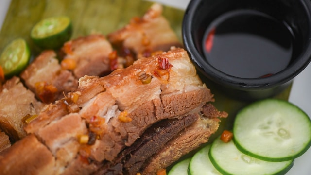

観光
- マゼランクロス マゼランがセブ島に到着した際に建てられた十字架。
- サント・ニーニョ教会 フィリピンで最も古いローマ・カトリック教会の一つ。
- オスロブ ジンベイザメと一緒に泳ぐことができる人気のアクティビティスポット。
セブ島はフィリピンの中部に位置する島で、多くの旅行者が訪れる観光地です。
美しいビーチと豊かな文化で知られています。
セブ島の歴史について |
|
|---|---|
| 歴史 | セブ島は、フィリピンで最も古い都市の一つであり、多くの歴史的な出来事が起こりました。 |
| マゼラン | “大航海時代のポルトガル出身のスペインの航海者、探検家。 |
引用元：wikipedia
文化と伝統 |
|---|
|
セブ島は多様な文化と伝統を持つ地域です |
セブ島には様々な宿泊施設があります。
高級リゾートから手頃な価格のゲストハウスまで、旅行者のニーズに合わせた選択肢が豊富です。レチョン（豚の丸焼き）やシシグが有名です。
多くの旅行者がこの名物料理を楽しみにしています。
